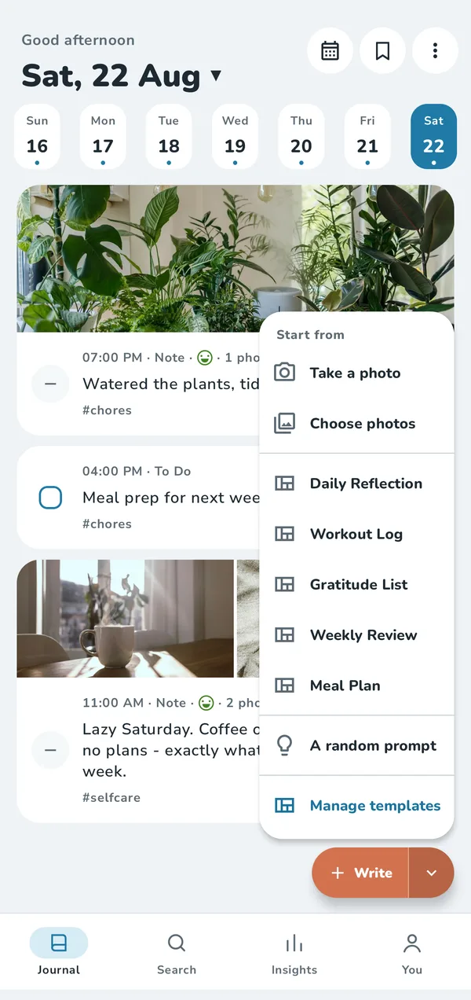
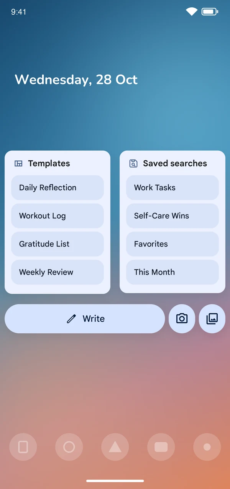
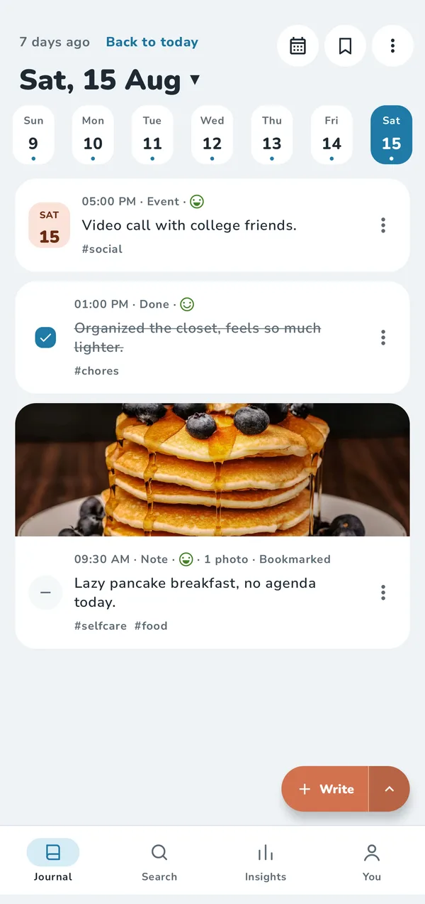
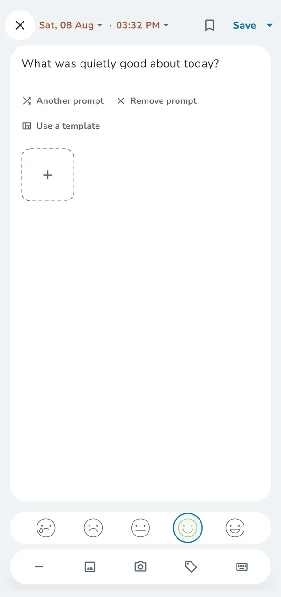

Free
$0 forever
- Unlimited entries and photos on your phone
- Templates, prompts, reminders and app lock
- Manual encrypted backups, newest 5 kept
- 30 MB of photo backup space
- Export to RTF and ZIP · Insights for the last 30 days
New name, same app · formerly Last Journal
Tamsi is a quick, private journal for Android. A thought, a to-do, a feeling or a photo, saved before the moment is gone. Then back to your day.
Not now, not later. No ad trackers either.
Your journal lives on your phone and works offline.
Nothing you write is fed to an AI.
Encrypted on your phone before they're uploaded.
How it works
Open, write a line, close. Tamsi keeps the friction out so the habit can stay.

Writing
Tap Write and a fresh page is ready with the keyboard up. Or start from a photo, a template or a prompt.

Widgets
Write in one tap, open a template, or go straight to a saved search, without hunting for the app first.

Your day, your way
Log the day the way it happened. Each entry can carry a mood and tags, and your week is one tap away.
Photos
Add photos to any entry, or share them in from your gallery and other apps.

Prompts
A gentle question to get you going, like “What was quietly good about today?” Swap it or remove it.
Privacy
Your journal is yours. Here's what that means in practice.
Read the Privacy PolicyNo account needed. Everything works offline, and your entries stay on your phone unless you turn on backups.
Backups and photos are encrypted on your phone, then stored only in encrypted form. Add a backup password for even stronger encryption.
App lock uses your phone's own fingerprint, face or PIN check. We never receive it.
Export to RTF, PDF or a portable ZIP any time, or import from Day One, Obsidian and Markdown.